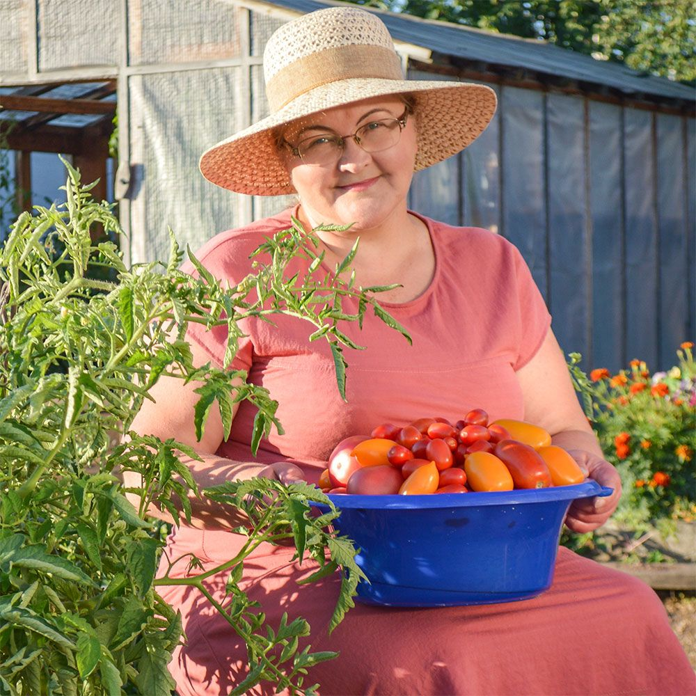
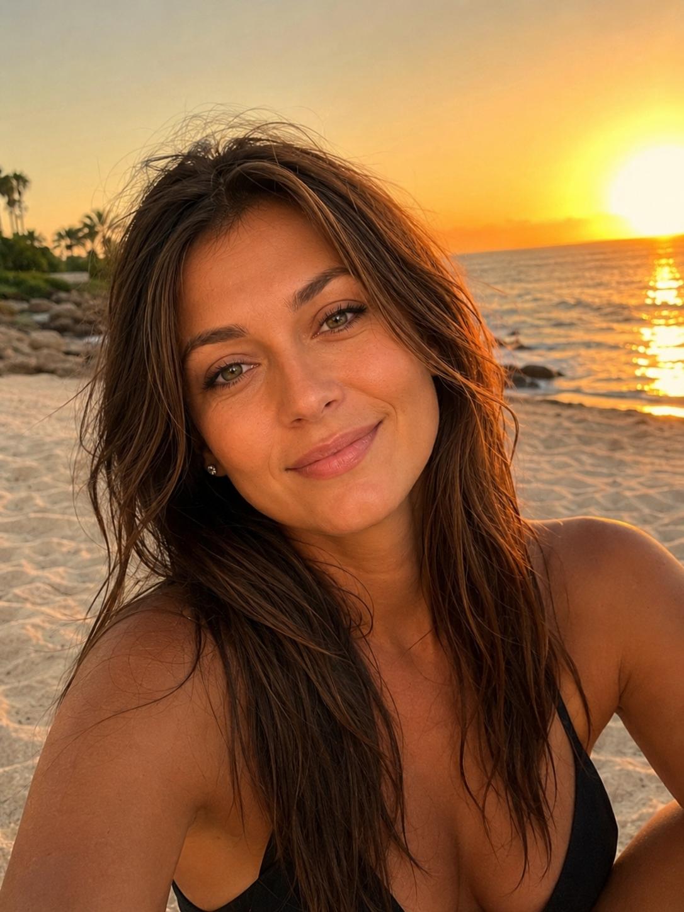
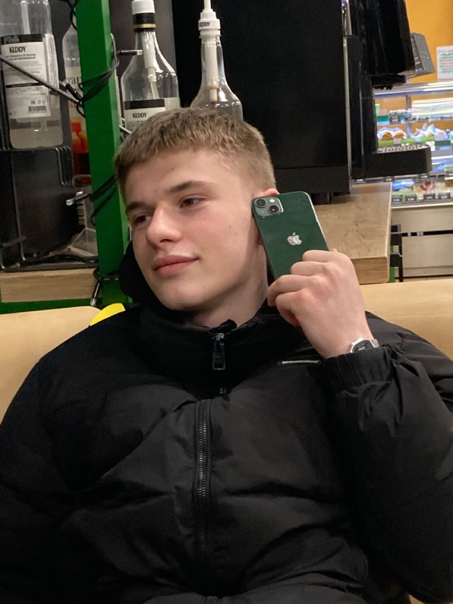
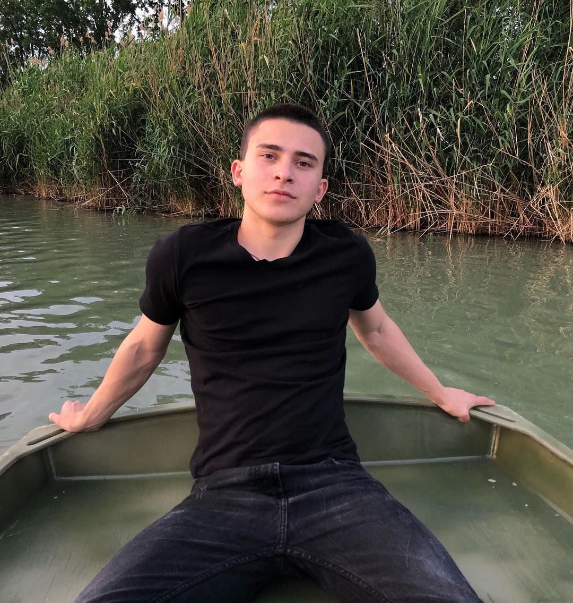
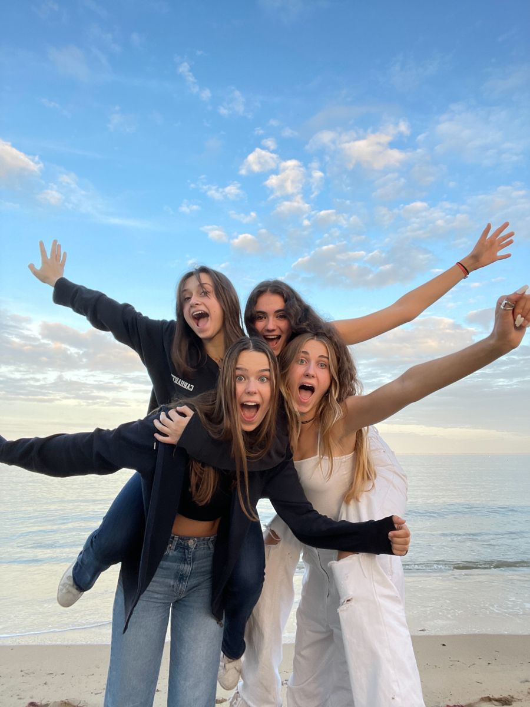
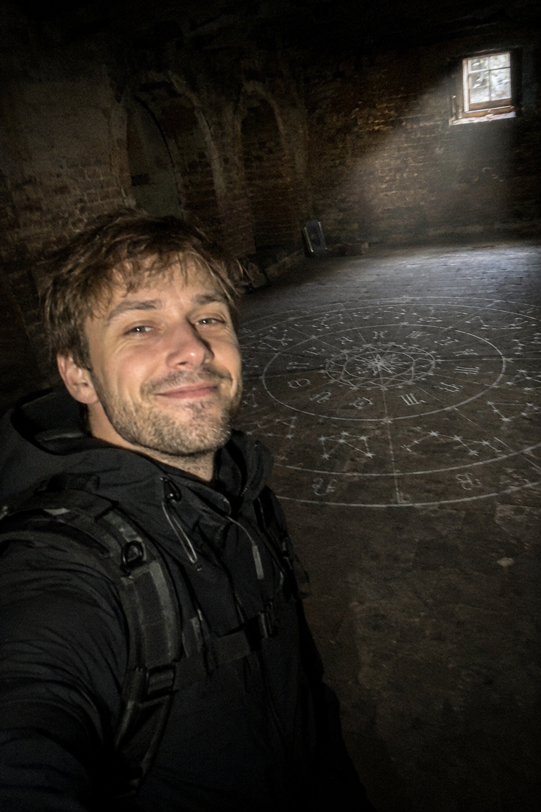

2 ч. назад · 🌐
Смотрите, какие помидоры выросли у меня на даче в этом году! Настоящие гиганты, чисто на натуральном поливе. Скоро будем крутить банки на зиму! 🍅




Смотрите, какие помидоры выросли у меня на даче в этом году! Настоящие гиганты, чисто на натуральном поливе. Скоро будем крутить банки на зиму! 🍅

Даже не верится, как быстро летит время... Кажется, только вчера вели в первый класс, а сегодня уже выпускной у сына! Горжусь тобой, наш взрослый дипломированный специалист! Впереди взрослая жизнь! 🧑🎓🎉💼
Урааа, официальный отпуск начался! Наконец-то выбрались с теми самыми любимыми девочками за город. Забываем про рабочие чаты и наслаждаемся летом на полную! 🍹☀️🔥 #отпуск #девочки такие девочки #лето

ВНИМАНИЕ, ПРОПАЛ ЧЕЛОВЕК! Известный блогер-исследователь Максим Иванов (27 лет) перестал выходить на связь. Последний раз его видели во время экстремального ночного стрима из заброшенной усадьбы Брюса в Истринском районе. Если у вас есть любая информация о местонахождении Максима, просим незамедлительно связаться со следствием.
